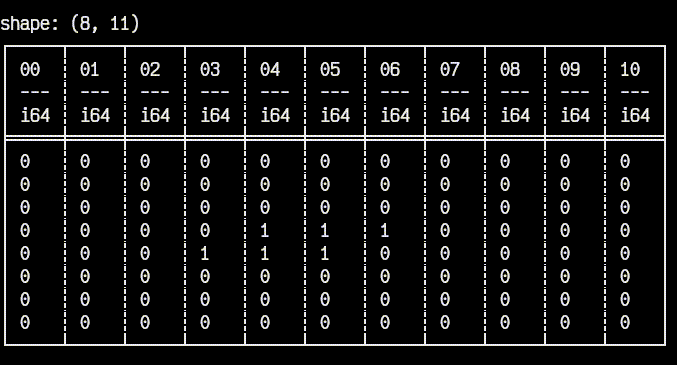

Extra.2 Plugin user¶
In the last section we saw what the plugin developers made available for a plugin user.
Now we put the user's hat and demonstrate that usage.
For this, we'll implement a CLI app that will parse a board file provided as an argument, then run a step of the simulation every delay seconds (also provided as an argument).
Tip: place the code from this section in a separate file, e.g.,
run.py.
Just like what we did previously, let's look at an overview of what's to come:
import argparse
import contextlib
import io
import sys
from time import sleep
from game_of_life import parse_board, board_to_df, step
import polars as pl
class Application:
# Initialize the board
def __init__(self): ...
# Printing the application object prints the board
def __str__(self) -> str: ...
# Run a step of the simulation every `delay` steps, for `n` maximum steps
def start(self, n, delay, print_df): ...
Notice how we're importing parse_board, board_to_df and step from our fully-developed plugin.
This could've been installed with pip! Check the publishing chapter for more on this.
So first things first: __init__.
Here we use the stdlib argparse module to capture the command line arguments we mentioned above.
Then, we call board_to_df with the result of parse_board, storing the resulting DataFrame in the Application object itself.
class Application:
def __init__(self):
self._args = argparse.Namespace()
cli = argparse.ArgumentParser(
prog="python -m game_of_life", description="Options"
)
cli.add_argument("-i", "--input", type=str, required=True)
cli.add_argument("-d", "--delay", type=float, default=0.2)
cli.add_argument("-n", "--num-steps", type=int, default=sys.maxsize)
cli.parse_args(namespace=self._args)
# [-i]
self.ifile: str = self._args.input
# [-d]
self.delay: float = self._args.delay
# [-n]
self.steps: int = self._args.num_steps
# Creates a pl.DataFrame from the provided file
self.df = board_to_df(parse_board(self.ifile))
Next, an optional but handy detail - we implement __str__ for Application in a way that printing an Application object will actually print the DataFrame stored internally:
class Application:
# ...
def __str__(self) -> str:
res = io.StringIO()
with (
pl.Config(tbl_rows=-1, tbl_cols=-1),
contextlib.redirect_stdout(res),
):
print(self.df)
return res.getvalue()
The pl.Config part just removes the default row and column limits when displaying a DataFrame - otherwise we'd see ellipses (...) instead of 1s and 0s.
Finally, start is where we display the DataFrame and call step to advance the simulation, over and over:
class Application:
# ...
def start(
self,
n: int | None = None,
delay: float | None = None,
print_df: bool = True,
):
if n is None:
n = self.steps
if delay is None:
delay = self.delay
if print_df:
print(self)
iteration_cnt = 0
try:
for _ in range(n):
self.df = step(self.df)
iteration_cnt += 1
if print_df:
# Clear screen
print("\033[2J")
print(self)
sleep(delay)
except KeyboardInterrupt:
print(
f"\nKeyboard Interrupt: ran for {iteration_cnt} iterations. Aborting..."
)
print(f"max_num_steps={self._args.num_steps}\ndelay={self._args.delay}")
To run the program, we only need two more things - an entry point and an input file.
Create a toad.txt in an input folder, containing:
and add this entry point at the end of run.py:
Now we can see the results of our work, at last:
# Compile the rust code
maturin develop --release
# Run the application
python run.py -i input/toad.txt -d 0.3

Victory!
Reference¶
The entire code for this plugin, including the user's side, can be found on GitHub.